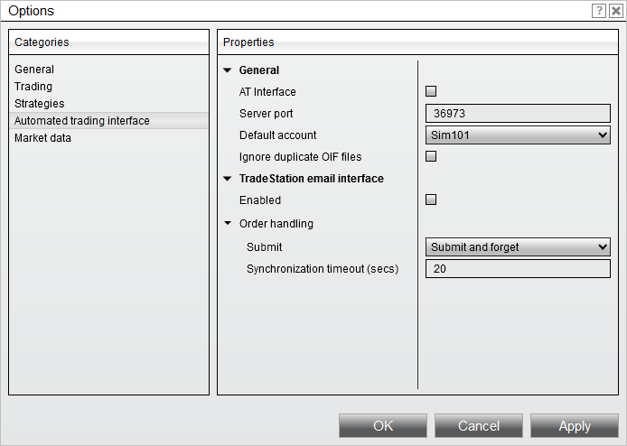

|
<< Click to Display Table of Contents >> Order Handling Options |


|
Order Handling Options
|
<< Click to Display Table of Contents >> Order Handling Options |
|
There are several Order Handling options available for the signals sent from TradeStation. All Order Handling options are available by selecting the Tools menu in the Control Center, selecting the menu name Options, and then selecting the Automated trading interface category. Please review all of the following Order Handling options to ensure your orders are managed as expected.
 |
 Understanding submit market order on TradeStation fill
Understanding submit market order on TradeStation fill
Submit market order on TS fillSubmits a market order when NinjaTrader receives a "strategy filled order" notification email from TradeStation. This is the recommended option. |
Submit "as-is"Submits orders as specified (limit, market, stop, stop-limit) when NinjaTrader receives a "strategy active order" notification email from TradeStation. Upon receiving the subsequent "strategy filled order" notification email from TradeStation, NinjaTrader will convert any unfilled shares/contracts to either market order or marketable limit order (substantially higher than inside market if buying or below market if selling) depending on the instrument type after a user defined number of seconds.
|
 Understanding submit and forget
Understanding submit and forget
Submit and forgetSubmits orders as specified (limit, market stop, stop-limit) when NinjaTrader receives a "strategy active order" notification. There is a high probability that your TradeStation strategy position size will be out of synchronization with your live brokerage account using this option. It requires manual user interaction and is NOT recommended. |
 Understanding synchronization time out
Understanding synchronization time out
Synchronization Time OutExcluding the "Submit and forget" option, NinjaTrader will notify you after the specified number of seconds if an order is out of sync with TradeStation's reported order fill amount. An example would be if TradeStation reported a market order fill of 1 contract, NinjaTrader submits a market order but the order is not filled for some reason after the specified amount of time, you will be notified. |
 How to enable order confirmation
How to enable order confirmation
Order ConfirmationYou can choose to have NinjaTrader prompt you for approval before submitting your order to your brokerage account. To enable this feature start in the NinjaTrader Control Center and select the Tools menu, then select the menu name Options, once in the Options window , click on the Trading category and check "Confirm order placement". |
 Understanding special handling for FX through FOREX.com/City Index
Understanding special handling for FX through FOREX.com/City Index
Special Handling for FX through FOREX.com/City IndexFOREX.com will reject a limit order to buy at the offer or above or to sell at the bid or below. NinjaTrader can check the current market rate on limit order submission and automatically convert to market if the limit price is invalid according to FOREX.com but in your favor resulting in a fill. To have NinjaTrader check for these conditions, you must be subscribed to rate data for the currency pair being traded. We suggest opening a Market Analyzer (to open a Market Analyzer window select the File menu and then the menu name New) and adding all traded currency pairs to this grid. This ensures that there is available rate data for NinjaTrader to cross check an incoming limit price against. |